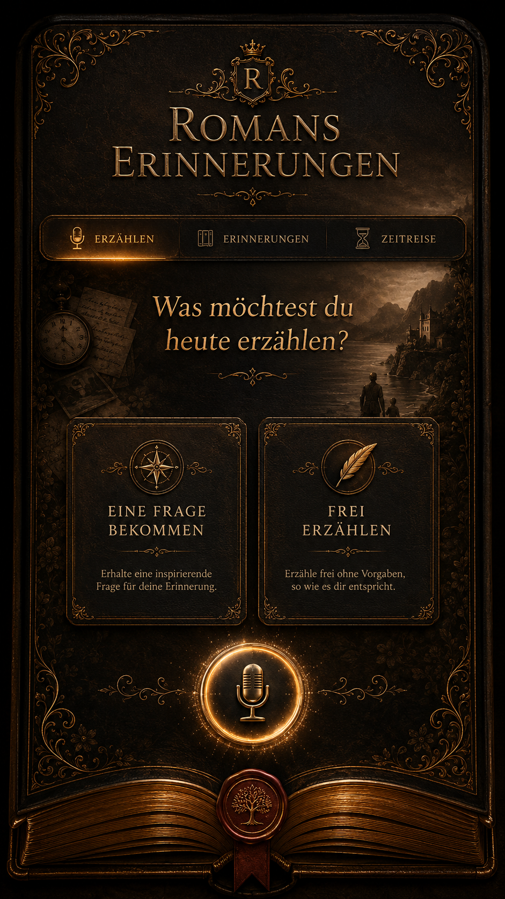

Eine Seite aus Romans Leben
Zeitliche Einordnung
Ein Leben voller Geschichten

Erzähl einfach. Nimm dir Zeit. Die Erinnerung darf ihren eigenen Weg nehmen.
Ich schreibe deine Erzählung auf …
Menschen, Orte, Begegnungen und besondere Augenblicke.
Mit jeder Erinnerung wächst die Chronik.